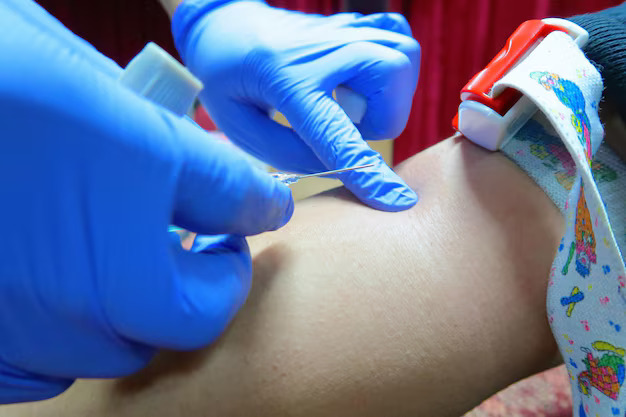

Genetic clarity
Testing support for chromosomal and inherited conditions when screening or history raises concern.
Safe, ultrasound-guided prenatal diagnostic testing support in Pune for families who need clearer answers about genetic or chromosomal risks during pregnancy.

Testing support for chromosomal and inherited conditions when screening or history raises concern.
CVS is usually discussed earlier in pregnancy, while amniocentesis is commonly planned later.
Reports are explained with sensitivity so families can make informed next-step decisions.

Pregnancy is a special journey, but it can also bring questions about your baby's health. If you or your doctor suspect a risk of genetic or chromosomal conditions, Chorionic Villus Sampling (CVS) or Amniocentesis can help you get clear answers early in pregnancy. At our advanced prenatal testing centre in Pune, we provide safe, precise, and compassionate prenatal diagnostic tests under expert supervision. We use ultrasound-guided techniques and modern lab testing to detect conditions like Down syndrome, thalassaemia, and cystic fibrosis with high accuracy.
These are the existing prenatal diagnostic testing options and support points from the original page, presented in the Nakshatra redesign system.
Performed at 11-14 weeks to detect genetic and chromosomal conditions early.
Sample taken through the cervix via a thin catheter under ultrasound guidance.
Sample taken through the abdomen using a fine needle, with minimal discomfort.
Analyzes amniotic fluid to assess chromosomal issues and neural tube defects.
Real-time guidance improves accuracy and reduces risks during both procedures.
Down syndrome, Tay-Sachs, Thalassemia; amniocentesis also detects spina bifida.
Low miscarriage risk (about 0.2%). Sterile, ultrasound-guided techniques are used.
Obstetrician or genetic counselor explains results and next steps with privacy.
The original care advantages are preserved here with clearer spacing, stronger contrast, and reliable icons.
Obstetricians and genetic specialists experienced with high-risk and twin pregnancies.
Real-time ultrasound guidance supports safety and precision during procedures.
Accurate, reliable genetic and chromosomal analysis is coordinated with care.
Pre-test counseling, clear result explanation, and ongoing support.
Complete privacy and sensitive handling of medical information.
Early, accurate answers to help you plan a healthy pregnancy.
The original provider roles remain intact, organized into responsive consultation cards.
CVS is a prenatal diagnostic test performed at 11-14 weeks that collects a small placental tissue sample to detect genetic and chromosomal disorders such as Down syndrome, Tay-Sachs, and Thalassemia.
Amniocentesis is done at 15-20 weeks to analyze amniotic fluid for chromosomal and neural tube defects (e.g., spina bifida) and inherited disorders, providing detailed information for pregnancy management.
Your obstetrician or genetic counselor explains the results, discusses further testing if needed, and guides you through safe, informed next steps.
Typically recommended between 15-20 weeks, especially with abnormal screening results, family history of genetic disorders, or maternal age 35+.
When performed by experienced specialists, both tests are considered safe. Risks like miscarriage are rare, about 0.2%. We use sterile, ultrasound-guided procedures to minimize risks.
No. CVS detects genetic/chromosomal disorders but not structural defects (e.g., spina bifida). For a complete assessment, your doctor may recommend detailed ultrasound or amniocentesis.
Book a prenatal diagnostic consultation in Baner, Pune to discuss timing, safety, reports, and next steps with compassionate medical support.